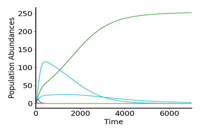
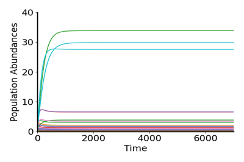

Non-Linear Growth — Little Numbers with Big Effects


I lied
So I may have told a fib when I claimed that this portfolio would be strictly for presenting projects. But it is sort of a coding project (or at the very least a project that required coding). I've included this page as it allows me to easily reference back to the work I did while doing an ecology internship at CNRS in France during the summer of 2024. Due to a conrtoversial paper (Hatton et al 2024) that was published just before my arrival, my supervisor, JF, and I chose to look at how non-linear growth could provide an argument for competitive coexistence without the typical arguments such as niche differentiation or spatial variability. I have included the (informal) report that I wrote at the end of this internship opportunity, a report that was influential in JF's contribution to the the response paper of Aguadé-Gorgorió et al 2025.